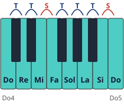

Módulo 3: Escalas en todas las tonalidades
La gimnasia diaria del pianista… y el mapa de la armonía.
Todas las escalas mayores siguen el mismo patrón de distancias: tono, tono, semitono, tono, tono, tono, semitono. Las alteraciones de la armadura existen para que ese patrón se cumpla.
Escalas: técnica y teoría a la vez
Las escalas desarrollan la igualdad de los dedos y el paso del pulgar, y te enseñan las tonalidades. El círculo de quintas las ordena: cada paso a la derecha añade un sostenido y cada paso a la izquierda, un bemol.

1. Do mayor, la referencia

🎼 Escala de Do mayor · 2 octavas, manos juntas
Dedos: el pulgar «pasa por debajo» tras el 3.º y el 4.º dedo; los dedos largos «pasan por encima» al bajar.
2. Reglas de digitación
- 🖐️ El pulgar no toca teclas negras (salvo casos muy concretos).
- 🖐️ Los dedos se agrupan en 1-2-3 y 1-2-3-4: los grupos se ajustan para que los dedos largos caigan en las teclas negras.
- 🖐️ El pulgar pasa por debajo sin mover el codo; prepara el paso girando ligeramente el antebrazo.
- 🖐️ Estudia siempre manos separadas primero: los «pasos de pulgar» de cada mano no coinciden.

3. Digitaciones estándar (una octava)
| Tonalidad | Mano derecha | Mano izquierda |
|---|---|---|
| Do, Sol, Re, La, Mi | 1 2 3 1 2 3 4 5 | 5 4 3 2 1 3 2 1 |
| Si | 1 2 3 1 2 3 4 5 | 4 3 2 1 4 3 2 1 |
| Fa | 1 2 3 4 1 2 3 4 | 5 4 3 2 1 3 2 1 |
| Si♭ | 4 1 2 3 1 2 3 4 | 3 2 1 4 3 2 1 3 |
| Mi♭ | 3 1 2 3 4 1 2 3 | 3 2 1 4 3 2 1 3 |
| La♭ | 3 4 1 2 3 1 2 3 | 3 2 1 4 3 2 1 3 |
| Re♭ | 2 3 1 2 3 4 1 2 | 3 2 1 4 3 2 1 3 |
| Fa♯ / Sol♭ | 2 3 4 1 2 3 1 2 | 4 3 2 1 3 2 1 4 |
Digitaciones de uso habitual en los métodos tradicionales; algunas ediciones proponen variantes.
4. Escalas menores
| Tipo | Fórmula (desde La) | Rasgo |
|---|---|---|
| Natural | La Si Do Re Mi Fa Sol La | Misma armadura que su relativa mayor (Do) |
| Armónica | La Si Do Re Mi Fa Sol♯ La | 7.º grado elevado: crea la sensible |
| Melódica | Sube con Fa♯ y Sol♯; baja como la natural | Suaviza el salto de la armónica |
🎼 Escala de La menor armónica · 1 octava, manos juntas
El 7.º grado elevado (Sol♯) crea la sensible y el intervalo característico de 2.ª aumentada Fa–Sol♯.
Tono y semitono: la «regla» del teclado
Un semitono es la distancia más pequeña del piano: de una tecla a la de al lado, sea blanca o negra, sin saltarte ninguna. Un tono son dos semitonos. Fíjate en que Mi–Fa y Si–Do no tienen tecla negra en medio: son semitonos.

Construir cualquier escala mayor
- Escribe las siete notas seguidas desde la nota inicial (Sol, La, Si, Do, Re, Mi, Fa, Sol).💡 Cómo se hace: escribe los nombres por orden (Do, Re, Mi, Fa, Sol, La, Si) empezando por la nota que quieras y vuelve a ella al final: 8 notas en total. Cada nombre debe aparecer una sola vez; por eso más tarde se escribe Fa♯ y no Sol♭.
- Comprueba el patrón T-T-S-T-T-T-S entre cada pareja.💡 Cómo se hace: mira el teclado (o el dibujo de arriba) y cuenta entre cada pareja de notas: si entre las dos teclas hay otra en medio (blanca o negra), es un tono; si están pegadas, sin nada en medio, es un semitono. Escribe T o S debajo de cada pareja y compáralo con T-T-S-T-T-T-S.
- Donde no se cumpla, sube o baja la nota con ♯ o ♭. En Sol mayor, de Mi a Fa hay un semitono y debería haber un tono: por eso Fa se convierte en Fa♯.💡 Cómo se hace: si la distancia es más pequeña de la que pide el patrón, sube la nota de arriba con ♯; si es más grande, bájala con ♭. Al cambiar una nota cambian dos distancias (la de antes y la de después), así que vuelve a comprobar la pareja siguiente: en Sol mayor, al subir Fa a Fa♯ queda Fa♯–Sol = semitono, justo lo que pide el final del patrón.
- Las alteraciones que te salen son la armadura de esa tonalidad.💡 Cómo se hace: copia las alteraciones al principio del pentagrama, en el orden de siempre: los sostenidos en el orden Fa–Do–Sol–Re–La–Mi–Si y los bemoles en el orden Si–Mi–La–Re–Sol–Do–Fa. Compruébalo con el círculo de quintas del módulo.
🎼 Escala de Sol mayor · manos juntas
La armadura (un sostenido) convierte todos los Fa en Fa♯: así la escala cumple el patrón T-T-S-T-T-T-S.
En Fa mayor ocurre lo contrario: entre La y Si debería haber un semitono, así que Si baja a Si♭. Y como el pulgar no debe caer en una tecla negra, la mano derecha cambia de digitación:
🎼 Escala de Fa mayor · manos juntas
Mano derecha 1-2-3-4, 1-2-3-4: así el pulgar no cae en el Si♭ (tecla negra). La izquierda sigue como en Do.
El círculo de quintas, a fondo
El círculo de quintas es un mapa de las 24 tonalidades (12 mayores y sus 12 menores relativas) ordenadas de forma que las vecinas se parecen mucho entre sí. Con él puedes saber la armadura de cualquier tonalidad, encontrar sus acordes, transportar y entender por qué ciertos acordes «quieren» ir a otros.
1. Cómo se construye
- Empieza en Do, arriba del todo (las doce de un reloj).💡 Cómo se hace: Do mayor no tiene alteraciones: es el punto de partida y en el círculo está junto a su relativa, La menor.
- Gira a la derecha subiendo una 5.ª justa en cada paso: Do → Sol → Re → La → Mi → Si → Fa♯ → Do♯.💡 Cómo se hace: una 5.ª justa son 7 semitonos, o en la mano, del pulgar al meñique en la posición de cinco dedos. Atajo: desde cualquier tecla blanca la 5.ª justa es otra tecla blanca, excepto desde Si (Si–Fa♯).
- Gira a la izquierda bajando una 5.ª en cada paso: Do → Fa → Si♭ → Mi♭ → La♭ → Re♭ → Sol♭ → Do♭.💡 Cómo se hace: bajar una 5.ª lleva a la misma nota que subir una 4.ª justa (5 semitonos): desde Do, la 4.ª es Fa; desde Fa, Si♭; y así sucesivamente.
- Abajo, las dos mitades se encuentran.💡 Cómo se hace: Fa♯ mayor (6♯) y Sol♭ mayor (6♭) son la misma tonalidad escrita de dos formas: suenan igual en el piano. Esto se llama enarmonía. Pasa lo mismo con Si = Do♭ y Do♯ = Re♭.
2. ¿Por qué cada paso añade una alteración?
Compara Do mayor con su vecina de la derecha, Sol mayor:
| Grado | 1 | 2 | 3 | 4 | 5 | 6 | 7 | 8 |
|---|---|---|---|---|---|---|---|---|
| Do mayor | Do | Re | Mi | Fa | Sol | La | Si | Do |
| Sol mayor | Sol | La | Si | Do | Re | Mi | Fa♯ | Sol |
Solo cambia una nota: Fa se convierte en Fa♯, que es el 7.º grado (la sensible) de Sol. Siempre ocurre así: el sostenido nuevo es el 7.º grado de la tonalidad nueva. Hacia la izquierda pasa lo contrario: Fa mayor es Do mayor con Si♭, y Si♭ es su 4.º grado. El bemol nuevo es el 4.º grado de la tonalidad nueva. Por eso las tonalidades vecinas comparten seis de sus siete notas y suenan «emparentadas».
🎼 Armaduras con sostenidos (girando a la derecha en el círculo)
Cada compás suena el acorde de la tónica mayor. Orden de los sostenidos: Fa – Do – Sol – Re – La – Mi – Si. El último sostenido es la sensible: la tónica mayor está un semitono por encima.
🎼 Armaduras con bemoles (girando a la izquierda en el círculo)
Cada compás suena el acorde de la tónica mayor. Orden de los bemoles: Si – Mi – La – Re – Sol – Do – Fa (el de los sostenidos al revés). El penúltimo bemol es la tónica mayor.
3. El orden de las alteraciones
| Alteraciones | Orden (siempre el mismo) | Truco |
|---|---|---|
| Sostenidos | Fa – Do – Sol – Re – La – Mi – Si | Van ellos mismos por quintas: ¡es el círculo otra vez, empezando en Fa! |
| Bemoles | Si – Mi – La – Re – Sol – Do – Fa | El orden de los sostenidos leído al revés |
Una armadura con tres sostenidos lleva siempre los tres primeros: Fa♯, Do♯ y Sol♯. Nunca encontrarás una armadura con «Do♯ y Re♯» sin Fa♯.
4. Leer la tonalidad a partir de la armadura
- Si hay sostenidos: el último sostenido, más un semitono, es la tónica mayor.💡 Cómo se hace: mira el sostenido más a la derecha de la armadura y sube un semitono en el teclado. Fa♯ – Do♯ – Sol♯: el último es Sol♯ → un semitono más arriba es La → La mayor.
- Si hay bemoles: el penúltimo bemol es la tónica mayor.💡 Cómo se hace: Si♭ – Mi♭ – La♭ – Re♭: el penúltimo es La♭ → La♭ mayor. La única excepción es la armadura de un solo bemol (no tiene penúltimo): es Fa mayor, apréndela de memoria.
- Encuentra la relativa menor: baja 3 semitonos desde la tónica mayor.💡 Cómo se hace: o, lo que es lo mismo, busca el 6.º grado de la escala mayor. La mayor → bajando 3 semitonos (La, Sol♯, Sol, Fa♯) → Fa♯ menor. En el círculo, la relativa está justo debajo, en el anillo interior.
- Decide entre la mayor y su relativa menor mirando la música.💡 Cómo se hace: la armadura sola no basta: mira el último acorde y si aparece la sensible de la menor como alteración accidental. Lo verás paso a paso en el módulo 5.
| Armadura | Regla | Tonalidad mayor | Relativa menor |
|---|---|---|---|
| Sin alteraciones | — | Do mayor | La menor |
| 2♯ (Fa, Do) | Do♯ + semitono | Re mayor | Si menor |
| 4♯ (Fa, Do, Sol, Re) | Re♯ + semitono | Mi mayor | Do♯ menor |
| 1♭ (Si) | Excepción | Fa mayor | Re menor |
| 2♭ (Si, Mi) | Penúltimo: Si♭ | Si♭ mayor | Sol menor |
| 5♭ (Si, Mi, La, Re, Sol) | Penúltimo: Re♭ | Re♭ mayor | Si♭ menor |
5. Al revés: escribir la armadura de una tonalidad
- Cuenta cuántos pasos hay desde Do en el círculo.💡 Cómo se hace: Mi mayor: Do → Sol (1) → Re (2) → La (3) → Mi (4). Cuatro pasos a la derecha = 4 sostenidos. Mi♭ mayor: Do → Fa (1) → Si♭ (2) → Mi♭ (3). Tres pasos a la izquierda = 3 bemoles.
- Escribe las primeras alteraciones del orden.💡 Cómo se hace: 4 sostenidos = Fa♯, Do♯, Sol♯, Re♯. 3 bemoles = Si♭, Mi♭, La♭.
- Para una tonalidad menor, busca primero su relativa mayor.💡 Cómo se hace: sube 3 semitonos desde la tónica menor: Sol menor → Si♭ mayor → 2 bemoles (Si♭, Mi♭). Mi menor → Sol mayor → 1 sostenido (Fa♯).
6. Relativas y homónimas
| Qué comparten | Ejemplo | En el círculo | |
|---|---|---|---|
| Relativas | La misma armadura (las mismas notas), distinta tónica | Do mayor y La menor | Una encima de otra |
| Homónimas | La misma tónica, distinta armadura | Do mayor (sin alteraciones) y Do menor (3♭) | La menor homónima está 3 pasos a la izquierda de la mayor |
7. ¿Por qué hay tonalidades «raras»?
Do♯ mayor (7♯) y Re♭ mayor (5♭) suenan igual. Los compositores suelen elegir la escritura con menos alteraciones: por eso verás muchas obras en Re♭ mayor y muy pocas en Do♯ mayor. Al leer, si una armadura te parece imposible, piensa en su enarmónica.
🧩 La armadura tiene Fa♯, Do♯ y Sol♯. ¿Cuál es la tonalidad mayor?
🧩 La armadura tiene Si♭, Mi♭ y La♭. ¿Cuál es la tonalidad mayor?
🧩 ¿Cuántos sostenidos tiene Mi mayor?
🧩 ¿Cuál es la relativa menor de Fa mayor?
🗓️ Cómo practicar las escalas cada día (10 minutos)
- Elige dos tonalidades vecinas del círculo de quintas (por ejemplo, Sol y Re). Cambia cada semana.
- Manos separadas, una octava, a negra = 60: atención al paso del pulgar, sin acentos.
- Manos juntas, dos octavas, en corcheas.
- Con ritmos (largo-corto y corto-largo) y en staccato y legato.
- Termina tocando la escala con los ojos cerrados: el tacto se convierte en tu mapa.
⚠️ Errores frecuentes y cómo corregirlos
| Lo que pasa | Por qué | Cómo corregirlo |
|---|---|---|
| Se oye un «golpe» al pasar el pulgar | El pulgar llega tarde y cae de golpe | Mueve el pulgar por debajo de la mano antes de necesitarlo, ya preparado sobre su tecla |
| El codo se abre al pasar el pulgar | La mano gira en lugar de desplazarse | Desplaza el antebrazo en horizontal y deja el codo cerca del cuerpo |
| Las dos manos no van juntas | Los pasos de pulgar no coinciden y una mano se adelanta | Practica manos juntas solo el tramo donde se desajustan, muy lento |